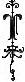
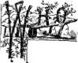

 HOU unrelenting Past!
Strong are the barriers round thy dark domain—
And fetters, sure and fast,
Hold all that enter thy unbreathing reign.
Far in thy realm, withdrawn,
Old empires sit in sullenness and gloom;
And glorious ages, gone,
Lie deep within the shadow of thy womb.
Full many a mighty name
Lurks in thy depths, unuttered, unrevered:
With thee are silent fame,
Forgotten arts, and wisdom disappeared.
W. C. BRYANT.
Chapter I
Difficulties of the subject—Lesson to be learned—The pursuit of knowledge—Recent Advances—Prehistoric past of the Old World—Of the New—Of Mexico and the South—The Isles of the Pacific—Similar nature of the relics—The wonders of the present age—History of popular Opinion on this subject—The teachings of the Bible—Nature of the evidence of man's antiquity—Geology—Astronomy—Unfolding of life—Nature of our inquiry.
CAN read the book of the past? Who can tell us the story of Creation's morn? It is, not written in history, neither does it live in tradition. There is mystery here; but it is hid by the darkness of bygone ages. There is a true history here, but we have not learned well the alphabet used. Here are doubtless wondrous scenes; but our stand-point is removed by time so vast, the mist of years is so thick before us, that only the ruder outlines can be determined. The delicate tracery, the body of the picture, are hidden from our eye. The question as to the antiquity and primitive history of man, is full of interest in proportion as the solution is beset with difficulties. We question the past; but only here and there a response is heard. Surely bold is he who would attempt, from the few data at hand, to reconstruct the history of times and people so far removed. We quickly become convinced that many centuries, and tens of centuries, have rolled away since man's first appearance on the earth. We become impressed with the fact, "that multitudes of people have moved over the surface of the Earth, and sunk into the night of oblivion, without leaving a trace of their existence: without a memorial through which we might have at least learned their names." 1
To think of ourselves, is to imagine for our own nation an immortality. We are so great, so strong, surely nothing can move us. Let us learn humility from the past: and when, here and there, we come upon some reminder of a vanished people, trace the proofs of a teeming population in ancient times, and recover somewhat of a history, as true and touching as any that poets sing, let us recognize the fact, that nations as well as individuals pass away and are forgotten.
The past guards its secret well. To learn of it we must seek new methods of inquiry. Discouraged by the difficulties in the way, many have supposed it hidden from the present by a veil which only thickens as time passes. In the remains of prehistoric times they have failed to recognize the pages of history. They saw only monuments of ancient skill and perseverance: interesting sketches, not historical portraits. Some writers have held that we must give up the story of the past, "whether fact or chronology, doctrine or mythology—whether in Europe, Asia, Africa, or America—at Thebes, or Palenque—on Lycian shore, or Salisbury plain—lost is lost and gone is gone for evermore." Such is the lament of a gifted writer,2 amongst the first to ponder over the mysteries of the past. At the present day, with better means at hand, a more hopeful view is taken. But here a caution is necessary; for, in attempting to reconstruct the history of primitive times, such is the interest which it inspires, that many allow imagination to usurp the place of research, and write in terms too glowing for history.3
The human mind is sleepless in the pursuit of knowledge. It is ever seeking new fields of conquest. It must advance: with it, standing still is the precursor of defeat. If necessary it invents new methods of attack, and rests not until it gains its objective point, or demonstrates the hopelessness of its quest. The world needs but be informed that on a given point knowledge is dim and uncertain, when there are found earnest minds applying to the solution of the mystery all the energies of their natures. All the resources of science are brought to bear; every department of knowledge is made to contribute of its store: and soon a mass of facts is established and a new science is added to the department of human knowledge.
Thus, with our knowledge of prehistoric times, what so seemingly vain as to attempt to roll back the flight of time, and learn the condition of primeval man? All the light of ancient history makes but little impression on the night of time. By its aid we can but dimly see the outlines of the fortieth century back; beyond is gloom soon lost in night. But a few short years ago, men did not think it possible to gain further information. With the materials at hand this could not be done. The triumph of the intellect was simply delayed, not hopelessly repulsed. Geology was but just beginning to make good its claim to a place among the sciences. This unfolded to man the physical history of the world as read from the rocks, and deals with times so vast and profound that we speak no longer of years, but of ages. And with the aid of Geology grand secrets were wrung from the past, and new light was thrown on the manners and customs of primitive man. Thus the foundation for still another science was laid, called Archæology, or the science of Human Antiquities. These two sister sciences are the keys by whose aid we have not only acquired much information of a past that seemed a hopeless enigma—but, as Columbus on the waste of waters could perceive traces of land as yet invisible, so can the present seekers after knowledge trace the signs of a satisfactory solution of many of the great questions relating to the origin and history of the vanished races of mankind.
In whatever land we commence our investigations, we quickly come upon the evidences of an ancient life long antedating all historical information. Ancient Egypt has been a fruitful theme for the antiquarians pen. The traveler has moralized over the ruins of her past greatness, and many pointed illustrations of national growth and decay have been drawn from her history.
Here was the seat of an ancient civilization, which was in the zenith of its power many centuries before Christ. The changes that have passed over the earth since that time are far more wonderful than any ascribed to the wand of the magician. Nations have come and gone, and the land of the Pharaohs has become an inheritance for strangers; new sciences have enriched human life, and the fair structure of modern civilization has arisen on the ruins of the past. Many centuries, with their burden of human hopes and fears, have sped away into the past, since "Hundred-gated Thebes" sheltered her teeming population, where now are but a mournful group of ruins. Yet to-day, far below the remorseless sands of her desert, we find the rude flint-flakes that require us to carry back the time of man's first appearance in Egypt to a past so remote that her stately ruins become a thing of yesterday in comparison to them.
In the New World, mysterious mounds and gigantic earth-works arrest our attention. Here we find deserted mines, and there we can trace the sites of ancient camps and fortifications. The Indians of the prairies seem to be intruders on a fairer civilization. We find here evidences of a teeming population. In the presence of their imposing ruins, we can not think that nomadic savages built them. They give evidences rather of a people having fixed habitations and seem to imply the possession of a higher civilization than that of the Indians. These questions demand solution; but how shall we solve the problem? Save here and there a deserted camp, or a burial mound, containing perhaps articles of use or adornment, all traces have vanished. Their earth-works and mounds are being rapidly leveled by the plow of modern times, and the scholar of the future can only learn from books of their mysterious builders.
In Mexico, and farther south, we find the ruins of great cities. To the student of antiquity, these far surpass in interest the ruined cities of the Nile or Euphrates valley. Babylon of old, with its walls, towers, and pleasure resorts, was indeed wonderful. In our own land cities, if not as ancient, yet fallen in more picturesque ruin, reward the labors of the explorer. Uxmal, Copan, and Palenque, invite our attention. Here are hieroglyphics in abundance, but no Rosetta Stone supplies the key by whose aid a Champollion can unravel the mystery.
The luxuriant vegetative growth of the tropics, with its fierce storms, is every year hastening the obliteration of these ruins, and we must improve the time well, if we would learn from them what they have to say of the past.
The isles of the Pacific give evidence that, long before the dawn of authentic history, man lived there. Indeed, as the islands which gem that ocean, from their configuration and position, seem to be but the elevated plateaus and mountain peaks of a continent that has gone down beneath the blue wave of the Pacific, so, throughout Polynesia can be traced the fragmentary remains of a civilization, the greater portion of which has been completely buried by the waters of oblivion, leaving only here and there a trace to reconstruct, if we can, the entire structure.
The earliest remains of man are very similar in all lands. They consist of weapons of war and of the chase, implements of domestic use, and articles of personal adornment. Few and simple as they are, they are capable of imparting useful information as to early times. By their aid we become eye-witnesses of the daily life of primitive man. We learn that though lacking in almost every thing we consider essential for comfort and happiness, yet they were actuated by much the same hopes and fears as the men of the present age. The great burden of life was the same then as now. There was the same round of daily labor made necessary by the same ceaseless struggle for existence. Rude forts and warlike implements show there was the same encroachment of the strong on the weak as now.
This is a wonderful age in many respects. In none, however, more wonderful than in the wide-spread diffusion of knowledge. The ordinary people now understand more of nature's secrets than the wise men of old. They are to-day interested in researches that a former generation would have relegated to the scholar and the man of leisure. No department of knowledge is retained for the researches of a favored few. The farmer, the mechanic, and the man of business are alike interested in a knowledge of prehistoric times. The rude implements of the past appeal to the curiosity of all. We arise from a study of the past with clearer ideas of man's destiny. Impressed with the great advancement in man's condition from the rude savagery of the drift, to the enlightened civilization of to-day, what may we not hope the advancement will be during the countless ages we believe a beneficent Providence has in store for his creature, man?
A history of the popular opinion of the antiquity of man is not only of interest, but should teach a lesson to all who think others are wrong because not holding the same views as they do. Hardly fifty years have passed since scientific men began to attribute to the human race an antiquity more remote than that assigned them by history and tradition. At first these views met with general opposition, much as did the theory of the present system of astronomy when it was first proclaimed. We laugh now at the ignorant fear's and prejudices used to combat both.
It was claimed that the Bible taught that man had lived on the globe scarcely six thousand years. The Bible is the book to which the Anglo-Saxon mind clings with the greatest reverence. The memories of childhood are associated with its pages, and its very appearance recalls the prayers of long ago. It is not strange then that the Christian world guards with jealous care against any thing which may be thought to weaken the force of its statements.
But it is human nature to go to extremes: and, when we give our support to one way of thinking, we find it difficult to be patient with those of the contrary opinion.
Now, the researches of some of the most eminent men and learned divines have amply shown, that there are no data given in the Scriptures on which to base an estimate as to the antiquity of man. Happily the Christian mind no longer shrinks from the conclusions reached by the scientist: and, indeed, it is the contemplation of the stupendous periods of Geological times, and the infinite greatness of the works of Creation as disclosed by Astronomy, with the extreme lowness of man's first condition as made evident by Archæology, that lend new force to the words, "What is man, that thou art mindful of him!"
The evidences on which we predicate an extreme antiquity for man are necessarily cumulative. It is not from one source alone that we obtain information, but from many. Eminent men in nearly every department of knowledge have lent their aid to the elucidation of this subject. It can only be understood by those who will fairly weigh the facts that modern discoveries have unrolled before their eyes. There are many who have not done this, and are consequently unable to project their mental vision so far back into the very night of time, as is now demanded for the beginning of man's first appearance on the earth. And, indeed, so enormously has this period been extended—so far back does it require us to go—that even the most enlightened investigator may well recoil in dismay when he first perceives the almost infinite lapse of years that are required by his calculation since the creation of man.
At this day the scholar must be ready to explain the steps by which he reaches his conclusions. Not necessarily explaining the minutiæ of his journey hither, but the main outlines of his course. This seems to call for a slight outline of Geology. The animal and vegetable tribes which have come and gone upon the earth, following each other like the shadows of passing clouds on a Summer's day, have left their remains in the rocks which at that time were forming. A close investigation of these remains shows that they form the record book of nature, wherein we are permitted to read somewhat of her secrets. This had long been a sealed book to man; but science, as we have seen, constantly extending her domain, at length taught him the alphabet.
And the Geologist now unfolds the past age of our world with a variety of detail, and a certainty of conclusion well calculated to inspire us with grateful admiration.
It is no longer a question that many ages must have rolled away, during which our world was totally unfit for life of any kind, either animal or vegetable.
The nebular theory of Laplace, as modified by the modern astronomers, so satisfactorily explains many of the phenomena of the solar system, that it takes rank almost as a demonstrated fact. According to the terms of this theory, our Earth, now so dependent on the sun for light and warmth, was itself a glowing orb, and as a bright star radiated its light and heat into space. Grand conception, and probably true. It is now useless to speculate as to how many cycles of almost infinite years had begun and ended, before Earth's fading fires gave notice that they must soon expire in night.
The stages through which the Earth passed in turn await the sun, save that there is no further beneficent luminary to give him light and heat: when time shall have quenched his fiery glow, death and night shall reign supreme, where now is life and light.
Time is long, and nature never hurries. She builds for infinite years, and recks not the time of building. The human mind is far too feeble to comprehend the duration of time that sped away and was gone ere the slowly falling temperature of the Earth admitted the formation of a crust over her surface. When that came, the first great scene was closed. The star had expired, the planet rolled in her annual course around the still glowing central sun. Now came the formative age of the world, when the great continents were outlined.
The atmosphere gradually freed itself from its weight of water- vapor, the rains descended, and the ocean took form and contour. We are concerned only with the outlines of Geology, not with its details. It is full of the most interesting facts, but is foreign to our present purpose. We will only say, there is a marked progression in the scale and importance of life forms.
The lower forms of animals appear first to be followed in time by the higher. It is true that some forms have survived through all the changes of Geological time to the present: yet, speaking generally, some forms of life are peculiar to each age, and the general phase of animal life is different with each period. They thus form epochs in the history of the world as read from the rocks, and though the beginning and ending of each age may blend by insensible gradations with that of the preceding and following, yet, taken as a whole, we observe in each such singularities of form and structure as to give name to each particular age.
In the fullness of time man appears; and it is our pleasant task to trace the evidence of his primitive state, his growth in culture, and his advancement made before the dawn of history. Our inquiry, then, is as to his prehistoric state. We use this term in the same sense as Dr. Wilson uses it: that is, to express the whole period disclosed to us by means of archæological evidence, as distinguished from what is known through historical records. We can not doubt but that this includes by far the largest portion of man's existence. The time embraced within historical records, though different in different portions of the world, is but a brief period in comparison to the duration of time since he first went forth to possess the Earth. If we can make plain to our readers that man has lived in the world an extremely long time, going back indeed to a former Geological age—that his first state was very low and rude—that he has risen to his present high estate by means of his own exertions continued through long ages—and from this form a prophecy of a golden age to come in the yet distant future, we shall feel that we have not written in vain.
REFERENCES
Title Title, Preface, Contents and List of Illustrations.
Chapter II: Early Geological Periods.